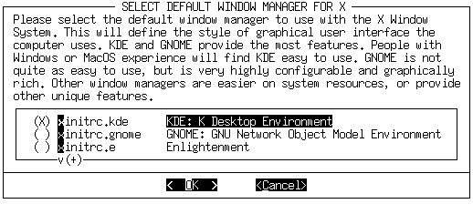

An easy Slackware installation requires, at minimum, the following:
Table 3-2. System Requirements
Hardware
Requirement
Processor
386
RAM
16 MB
Disk Space
500MB
Floppy Drive
1.44 MB
If you have the bootable CD, you will probably not need a floppy
drive. Of course, it stands to reason that if you plan to install from CD
you will need a CD-ROM drive. A network card is required for an NFS
install. See the section called NFS for more information.
The disk space requirement is somewhat tricky. The 500MB recommendation is
usually safe, but if you do a full install, you will need around one
gigabyte of available hard disk space. Most users don't do a full install.
In fact, many run Slackware on as little as 100MB of hard disk space.
Slackware can be installed to systems with less RAM and smaller
hard drives, but doing so will require a little elbow grease. If you're
up for a little work, take a look at the LOWMEM.TXT
file in the distribution tree for a few helpful hints.
For reasons of simplicity, Slackware has historically been divided into
software series. Once called “disk sets” because they were
designed for floppy-based installation, the software series are now used
primarily to categorize the packages included in Slackware. Today, floppy
installation is still possible for the A and most of the N series (see below).
The following is a brief description of each software series.
Table 3-3. Software Series
Series
Contents
A
The base system. Contains enough software to get up and
running and have a text editor and basic communication program.
AP
Various applications that do not require the X Window System.
D
Program development tools. Compilers, debuggers,
interpreters, and man pages are all here.
DES
Includes the GNU libc crypt() function.
E
GNU emacs.
F
FAQs, HOWTOs, and other miscellaneous documentation.
GTK
The GNOME desktop environment, GTK widget library, and the GIMP.
K
The source code for the Linux kernel.
KDE
The K Desktop Environment. An X environment which shares a
lot of look-and-feel features with the MacOS and Windows. The Qt
library, which KDE requires, is also in this series.
N
Networking programs. Daemons, mail programs, telnet, news
readers, and so on.
T
teTeX document formatting system.
TCL
The Tool Command Language. Tk, TclX, and TkDesk.
X
The base X Window System.
XAP
X Applications that are not part of a major desktop environment
(for example, Ghostscript and Netscape).
XD
X11 program development. Libraries, server link kit, and PEX
support.
XV
XView libraries, the OpenLook Virtual and Non-Virtual Window
Managers, and various other XView applications.
While it was once possible to install all of Slackware Linux from
floppy disks, the increasing size of software packages (indeed, of some
individual programs) has forced the abandonment of the floppy install for
all but two of the software series. The A series is still fully
installable from floppy disks, and most of the N series is as well. This
will give you a very basic system which can be used to install the rest of
the distribution via a network.
Please note that floppy disks are still required for a CD-ROM
install if you do not have a bootable CD, as well as for an NFS install.
If you have the bootable CD, available in the official disc set
published by Slackware, Inc. (see the section called Getting Slackware), a
CD-based installation will be a bit simpler for you. If not, you will need to
boot from floppies. Also, if you have special hardware that makes usage of the
kernel on the bootable CD problematic, you may need to use specialized floppies.
NFS (the Network File System) is a way of making filesystems
available to remote machines. An NFS install allows you to install
Slackware from another computer on your network. The machine from which
you are installing needs to be configured to export the Slackware
distribution tree to the machine to which you're installing. This, of course,
involves some knowledge of NFS, which is covered in the section called NFS (Network File System) in Chapter 5.
It is possible to perform an NFS install via such methods as PLIP
(over a parallel port), SLIP, and PPP (though not over a modem
connection). However, we recommend the use of a network card if
available. After all, installing an operating system through your printer
port is going to be a very, very slow process.
The boot disk is the floppy you actually boot from to begin the
installation. It contains a compressed kernel image which is used to
control the hardware during installation. Therefore, it is very much
required (unless you're booting from CD, as is discussed in
the section called CD-ROM). The boot disks are located in the
bootdsks.144/ directory in the distribution tree.
There are more Slackware boot disks than you can shake a stick at
(which is to say about 60). A complete list of boot disks, with a
description of each, is available in the Slackware distribution tree in
the file bootdsks.144/WHICH.ONE. However, most people
are able to use the bare.i (for IDE devices) or
scsi.s (for SCSI devices) boot disk image.
The root disk contains the setup program and a filesystem which is
used during installation. It is also required. The root disk images are
located in the directory rootdsks
in the distribution tree.
Fortunately, there are considerably fewer root disk images than
there are boot disks. In fact, there are only three.
color.gz is the one most people use. It's in
color, which is nice.
text.gz is just like color.gz,
only it's not in color. Go figure.
umsdos.gz is used for installing to a FAT
(Windows) partition, which is
generally recommended only for experimental purposes. For those
interested in trying Slackware on a Windows partition, we recommend
using ZipSlack or BigSlack.
A supplemental disk is needed if you are performing an NFS
install or installing to a system with PCMCIA devices. Supplemental disks
are in the rootdsks directory in the distribution tree, with the filenames
network.dsk and pcmcia.dsk.
The root disk will instruct you on the use of supplemental disks when it
is loaded.
Once you've selected a boot disk image, you need to put it on a floppy.
The process is slightly different depending on which operating system you're
using to make the disks. If you're running Linux (or pretty much any
Unix-like OS) you'll need to use
the dd(1) command. Assuming hejaz.dsk
is your disk image file and your floppy drive is /dev/fd0,
the command to make a hejaz.dsk floppy is:
# dd if=hejaz.dsk of=/dev/fd0
If you're running a Microsoft OS,
you'll need to use the RAWRITE.EXE program, which is
included in the distribution tree in the same directories as the floppy
images. Again assuming that hejaz.dsk is your disk image
file and your floppy drive is A:, open a DOS prompt and type the following:
After booting from your preferred media, you will need to partition your
hard disk. The disk partition is where the Linux filesystem will be created
and is where Slackware will be installed. At the very minimum we recommend
creating two partitions; one for your root filesystem
(/) and one for swap
space.
After the root disk finishes loading, it will present you with a login prompt.
Log in as root (there is no password). At the shell
prompt, run either cfdisk(8) or fdisk(8).
The cfdisk program provides a more user-friendly interface
than the regular fdisk program, but does lack some features.
We will briefly explain the fdisk program below.
Begin by running fdisk for your hard disk. In Linux, the
hard disks do not have drive letters, but are represented by a file. The first
IDE hard disk (primary master) is /dev/hda, the primary
slave is /dev/hdb, and so on. SCSI disks follow the same
type system, but are in the form of /dev/sdX. You will
need to start fdisk and pass it your hard disk:
# fdisk /dev/hda
Like all good Unix programs,
fdisk gives you a prompt (thought you were getting a menu,
right?). The first thing you should do is examine your current partitions.
We do that by typing p at the fdisk
prompt:
Command (m for help): p
This will display all sorts of information about your current
partitions. Most people pick a free drive to install to and then remove
any existing partitions on it to create room for the Linux partitions.
IT IS VERY IMPORTANT THAT YOU BACK UP ANY INFORMATION YOU WANT TO SAVE
BEFORE DESTROYING THE PARTITION IT LIVES ON.
There is no easy way to recover from deleting a partition, so always back up
before playing with them.
Looking at the table of partition information you should see a
partition number, the size of the partition, and its type. There's more
information, but don't worry about that for now. We are going to delete
all of the partitions on this drive to create the Linux ones. We run the
d command to delete those:
Command (m for help): d
Partition number (1-4): 1
This process should be continued for each of the partitions.
After deleting the partitions we are ready to create the Linux ones. We
have decided to create one partition for our root filesystem and one for
swap. It is worth noting that Unix
partitioning schemes are the subject of many flame wars, and that most users
will tell you the best way to do it. Our advice is to
make two partitions to start with, one for the root filesystem and one for
swap space. Over time you will learn a partitioning scheme that suits your
system.
Now we create the partitions with the n command:
Command (m for help):n
Command action
e extended
p primary partition (1-4)
p
Partition number (1-4):1
First cylinder (0-1060, default 0):0
Last cylinder or +size or +sizeM or +sizeK (0-1060, default 1060):+64M
You need to make sure you create primary partitions. The first partition is
going to be our swap partition. We tell fdisk to make
partition number 1 a primary partition. We start it at cylinder 0 and for the
ending cylinder we type +64M. This will give us a 64
megabyte partition for swap. (The size of the swap partition you need actually
depends on the amount of RAM you have. It is conventional wisdom that a swap
space double the size of your RAM should be created.) Then we define primary
partition number 2 starting at the first available cylinder and going all the
way to the end of the drive.
Command (m for help):n
Command action
e extended
p primary partition (1-4)
p
Partition number (1-4):2
First cylinder (124-1060, default 124):124
Last cylinder or +size or +sizeM or +sizeK (124-1060, default 1060):1060
We are almost done. We need to change the type of the first partition to type
82 (Linux swap). Type t to change the type, select the
first partition, and type 82. Before writing your
changes to the disk, you should look at the new partition table one last
time. Use the p in fdisk to display
the partition table. If everything looks good, type w
to write your changes to the disk and quit fdisk.
Once you have created your partitions, you are ready to install Slackware.
The next step in the installation process is running the
setup(8) program. To do so, simply type
setup at the shell prompt. setup is
a menu-driven system for actually installing the Slackware packages and
configuring your system.
The setup process goes something like this: You step through each option in
the setup program, in the order they are listed. (Of
course, you are free to do things in almost any order you choose, but chances
are it isn't going to work out very well.) Menu items are selected using the
up and down arrow keys, and the “Okay” and “Cancel”
buttons can be chosen by using the left and right arrow keys. Alternately,
each option has a corresponding key, which is highlighted in the option name.
Options which are flaggable (those indicated with a [X]) are toggled using the
spacebar.
Of course, all of that is described in the “help” section of
setup, but we believe in giving our readers their money's
worth.
If this is your first time installing Slackware, you might want to
take a look at the help screen. It will give a description of each part
of setup (much like the one we're writing now, but less
involved) and instructions for navigating the rest of the install.
If you require a keymap other than the United States “qwerty”
layout, you may want to take a look at this section. It offers a number
of alternate layouts for your keyboarding enjoyment.
If you created a swap partition (back in the section called Partitioning), this
section will allow you to enable it. It will autodetect and display the swap
partitions on your hard drive, allowing you to select one to format and enable.
The target section is where your other (non-swap) partitions are formatted and
mapped to filesystem mount points. A list of the partitions on your hard disk
will be displayed. For each partition, you will be given the option of whether
to format (and if so, whether to check for bad blocks) and a selection of inode
sizes to choose from. For normal use, the default inode size is fine.
The first option in the target section is the selection of a partition on
which to install your root (/)
filesystem. After that, you will be able to
map other partitions to filesystems as you choose. (For instance, you may want
your third partition, say /dev/hda3, to be your home
filesystem. This is just an example; map the partitions as you see fit.)
The source section is where you select the source media from which
you are installing Slackware. Currently there are four sources to choose
from. These are floppy, CD-ROM, NFS, or a premounted directory.
The floppy selection starts the prompting of many many diskettes. This option
requires a lot of time and patience, but it is possible. Keep in mind that
you need to make the floppies before you begin the setup program.
The CD-ROM selection enables a CD-ROM based installation. It will offer the
option of scanning for a CD-ROM drive or displaying a list from which you can
pick your type drive. Make sure you have the Slackware CD in your drive
before allowing it to scan. After the program finds your CD-ROM drive it will
ask if you want to perform a “slakware” or “slaktest”
install. The default is slakware, which is a standard installation. The
slaktest option installs a minimal set of software to the hard disk and keeps
the majority of it on the CD. You will need the “live” CD in
the official CD set for this option to work.
The NFS selection prompts for your network information and the
network information for your NFS server. The NFS server must be set up in
advance. Also note that you cannot use hostnames, you must use the IP
addresses for both your machine and the NFS server (there is no name
resolver on the setup disk).
The premounted directory offers the most flexibility. You can use
this method to install from things such as Jaz disks, NFS mounts over
PLIP, and FAT filesystems. Mount the filesystem to a location of your
choosing before running setup, then specify that location here.
The select option allows you to select the software series that
you wish to install. These series are described in
the section called The Software Series. Please note that you must install the A
series to have a working base system. All other series are optional.
Assuming that you have gone through the “target”,
“source”, and “select” options, the install option
will allow you to select packages from your chosen software series. If not,
it will prompt you to go back and complete the other sections of the setup
program. This option allows you to select from six different installation
methods: full, newbie,
menu, expert,
custom, and tag path.
The full option will install every package from all the
software series that you chose in the “select” section. There is
no further prompting. This is the easiest installation method, since you do
not need to make any decisions on the actual packages to install. Of course,
this option also takes up the most hard drive space.
The next option is newbie. This option installs all of
the required packages in the selected series. For all other packages, it
offers a prompt where you can select “Yes”, “No”, or
“Skip”. Yes and No do the obvious, while Skip will go ahead to
the next software series. Additionally, you will see a description and size
requirement for each package to help you decide if you need it. We recommend
this option for new users, as it ensures that you get all the required packages
installed. However, it is a little slow because of the prompting.
Menu is a faster and more advanced version of the newbie
option. For each series, a menu is displayed, from which you can select all
the non-required packages you want to install. Required packages are not
displayed on this menu.
For the more advanced user, install offers the expert
option. This allows you complete control over what packages get installed.
You can deselect packages that are absolutely required, resulting in a broken
system. On the other hand, you can control exactly what goes onto your system.
Simply select the packages from each series that you want installed. This is
not recommended for the new user, as it is quite easy to shoot yourself in
the foot.
The custom and tag path options are
also for advanced users. These options allow you to install based upon custom
tag files that you created in the distribution tree. This is useful for
installing to large numbers of machines fairly quickly. For more information
on using tag files, see the section called Making Tags and Tagfiles (for setup) in Chapter 16.
After selecting your installation method, one of a few things will
happen. If you selected full or menu, a menu screen will appear, allowing
you to select the packages to be installed. If you selected full,
packages will immediately start getting installed to the target. If you
selected newbie, packages will be installed until an optional package is
reached.
Note that it is possible to run out of space while installing. If
you selected too many packages for the amount of free space on the target
device, you will have problems. The safest thing to do is to select some
software and add more later, if you need it. This can easily be done
using Slackware's package management tools. For this information, see
Chapter 16.
The configure section allows you to do some basic system configuration, now
that the packages have been installed. What you see here depends in large
part upon which software you have installed. You will, however, always see
the following:
Kernel selection
Here you will be asked to select a kernel to install. You can
install the kernel from the boot disk you used to install, the Slackware
CD-ROM, or from another floppy which you (always thinking ahead) have
prepared. Or you can elect to skip, in which case the default kernel
will be installed and play will continue to the dealer's left.
Make a boot disk
Making a boot disk for future use is probably a good idea. You
will have the option of formatting a floppy and then creating one of
two types of boot disk. The first type, simple,
simply (go figure) writes a kernel to the floppy. A more flexible (and
highly recommended) option is lilo, which will of
course create a lilo boot disk. See the section called LILO in Chapter 7 for
information on lilo. Of course, you may also choose to simply
continue, in which case no boot disk will be made.
Modem
You will be prompted for modem information. More specifically,
you will be asked whether you have a modem, and if so, what serial port
it is on.
These next configuration subsections may or may not appear,
depending on whether or not you installed their corresponding packages.
(setup is all kinds of adaptive, yo.)
Timezone
This one's pretty straightforward: you will be asked what time
zone you are in. If you operate on Zulu time, we are very sorry; the
(extremely long) list is alphabetically ordered, and you're at the bottom.
Mouse
This subsection simply asks what kind of mouse you have, and
whether you want gpm(8) (console mouse support)
enabled on bootup.
Hardware clock
This subsection asks if your computer's hardware clock is set to
Coordinated Universal Time (UTC or GMT). Most PCs are not, so you
should probably say no.
Font
The font subsection allows you to choose from a list of
custom console fonts.
LILO
Here you are prompted for installation of LILO (the LInux LOader;
see the section called LILO in Chapter 7 for more information). If Slackware is to be
the only operating system on your computer, simple
should work just fine for you. If you are dual-booting, the
expert option is a better choice. See
the section called Dual Booting in Chapter 7 for more information on dual-booting. The
third option, do not install, is not recommended
unless you know what you're doing and have a very good reason for not
installing LILO. If you are performing an expert install, you will be
given a choice as to where LILO will be put. You may place LILO in the
MBR (Master Boot Record) of your hard drive, in the superblock of your
root Linux partition, or on a floppy disk.
Please note that if you are currently using another operating system's
boot loader it is advisable to install LILO either to the superblock of
your root Linux partition or to a floppy. Installing to the MBR in such
a case will obliterate the other operating system's boot loader and can
make life very difficult.
The CD-ROM subsection simply asks if you would like the system to
automatically scan for and mount an available CD-ROM disc in
/cdrom.
X Window Manager
This subsection will allow you to choose a default window manager
for X. See Chapter 6 for more details on X and
window managers.

No matter which packages you installed, the last thing configure
will do is ask you whether you want to go ahead and set a root password.
For security reasons, this is probably a good idea; however, like almost
everything else in Slackware, this is your call.